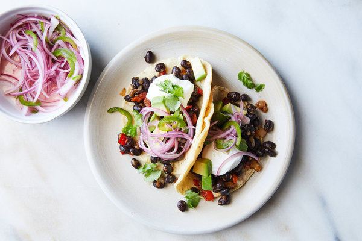

Black Bean Tacos

Description
Spicy pickled onions add brightness and tang to these hearty black bean tacos. The filling is a bit like chili but without the tomato, and perfect to wrap up in a tortilla. You can make the black beans up to 5 days ahead; they even freeze well. Then just warm them up, along with the tortillas, right before serving. The spicy onions will last for weeks in the fridge. Use them on everything: soups, salads, even grilled cheese sandwiches.
Ingredients
- 1 lime
- 1 small red onion or large shallot, thinly sliced
- 1 jalapeño, seeded and thinly sliced
- Large pinch of fine sea salt
- Small pinch of granulated sugar
- 2 tablespoons olive oil, plus more as needed
- 1 large onion, chopped
- 1/2 cup diced red or green bell pepper
- 2 garlic cloves, minced
- 1 jalapeño, seeded and minced
- 1 tablespoon tomato paste
- 1/2 tablespoon chili powder
- 1/2 teaspoon dried oregano
- 1/2 teaspoon ground cumin
- 2 (15-ounce) cans black beans, drained and rinsed
- Fine sea salt
- Corn tortillas, warmed
- 1 avocado, peeled, pitted and sliced
- Fresh cilantro, salsa and sour cream, for garnish (optional)
Steps
- Make the spicy onions: Squeeze the lime into a bowl and add the onion or shallot, jalapeño, salt and sugar to the juice. Set aside while you make the black beans.
- Prepare the beans: Heat a large skillet, then add 2 tablespoons oil. When oil is hot, add the onion and bell pepper and sauté until soft and golden, about 10 minutes. If the pan looks dry, drizzle in a little more oil.
- Add the garlic and jalapeño and sauté until fragrant, 1 minute. Stir in tomato paste, chili powder, oregano and cumin, and sauté until fragrant. Add the beans and a few large pinches of salt and let simmer until the flavors meld, about 15 minutes.
- Taste and add more salt, chili powder and oregano to taste. Serve beans with tortillas and avocado and top with the pickled onions and jalapeño and some of their liquid, adding any of the garnishes you like.